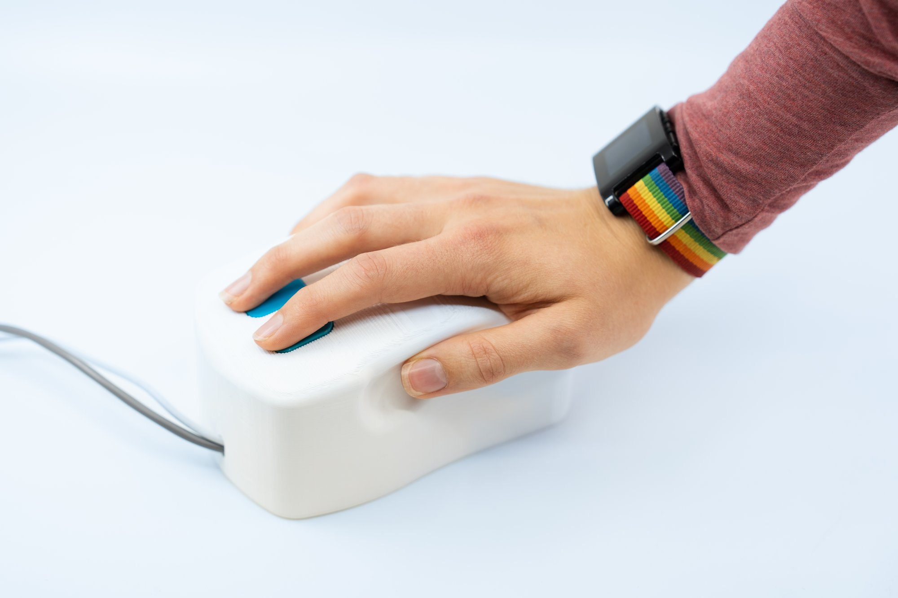
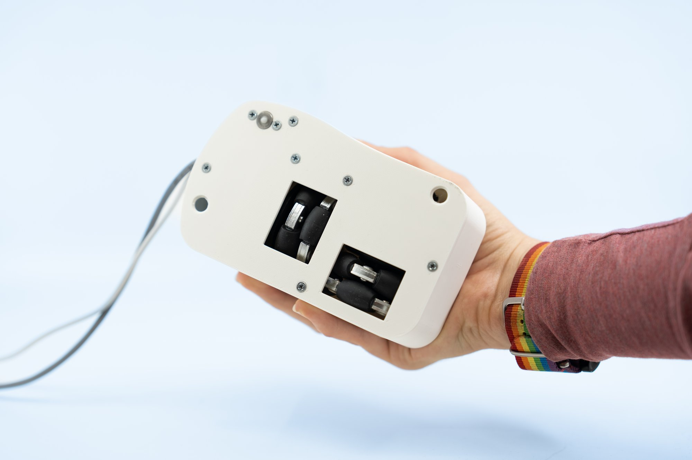
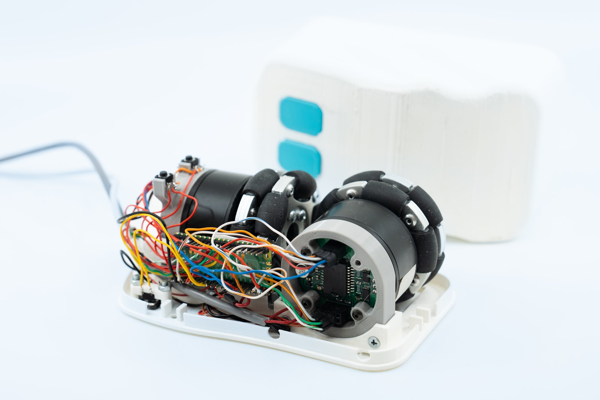

The Castor force feedback mouse in use.
The Castor mouse is a two button, two axis mouse that can provide force feedback on both axes.
Inside the mouse, two wheel assemblies are mounted at a 90° angle, protruding slightly from the bottom of the mouse.
Each wheel assembly consists of an omni-wheel mounted to a BLDC motor, which itself is mounted to the shell of the mouse.
A magnetic rotary encoder provides absolute rotational positioning of the wheel.
The 90° angle lets each wheel encode movement and provide force feedback in their respective axis, without affecting each other.
A ball caster is similarly mounted beneath the mouse, sitting freely beneath a push button.
This helps both balance the mouse and detect whether the mouse is on the table or being lifted (to disable the motors).
The mouse was designed to
be relatively easy and cheap to source parts for.
be relatively easy to make using tools available in most maker-spaces.
provide detailed and forceful actuation (which requires motors of significant size and heft),
while remaining as close in looks and experience to a regular mouse as possible.
To this end, its shell has been FFF manufactured in PLA plastic, and its electronics can be assembled on a single sided circuit board (or even point-to-point soldered with a bit of patience).
The mouse has a footprint of 15x9cm and a height of 7cm and weighs about half a kilo.


"The underside of the mouse showing two omni-wheels at a 90 degree angle, and a ball caster for balance and lift sensing (left). A Castor mouse with its shell off, showing its electronics, in this case point-to-point wired (right).
User study and demo application
To explore how the use of force feedback guidance affects user behavior and experience, a simple Electron app was developed, which lets the user navigate across a subset of the Cartograph map of Wikipedia.
Using a flag in the code, the application may be converted between a user-study mode, where the user is put through a sequence of targets and feedback types, or a demo mode, where the user may freely explore the map and feedback configurations.
In user-study mode,
users are presented with a sequence of 9 tasks of locating a topic on the map. Each task applies a different combination of no, weak and strong force feedback pulling and constraining. Latin square counterbalancing is applied using the participant id.
targets and starting points are picked randomly from a directionally-balanced pool of equal distances.
questionaire answers are collected after each completed task.
the cursor position on the screen and on the canvas is logged every 100 ms.
In the demo mode, the user may at any time bring up a modal allowing them to change topic and force feedback intensity.
Navigating to the topic "Dinosaur" in the demo application with mild pulling feedback.
The two red arrows are not normally visible but here visualise the direct path to the topic, and the force applied by the mouse.